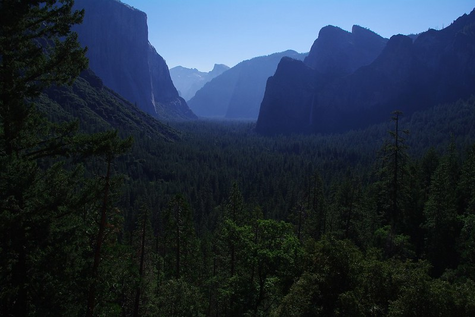

Celestia originates from Loveland, as her surname suggests. She is one of the few survivors able to escape from Loveland after it was invaded and destroyed by government officials. Loveland once was a thriving and caring community of humans and various specimens with superpowers. It was a gigantic settlement hidden within forests, so the citizens were constantly surrounded by lush nature. Celestia came from a family of flyers and stretchers (people with elasticity who can stretch various parts of their body to many different sizes)
